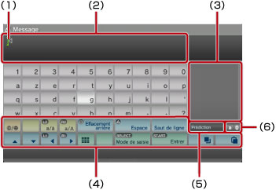
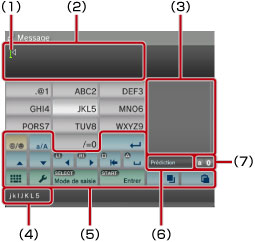

À propos du menu XMB™ > Utilisation du clavier
Utilisation du clavier
Le clavier est automatiquement affiché chaque fois que vous devez saisir du texte. Les présentes instructions supposent que vous utilisez le clavier français. Pour plus d'informations sur l'utilisation des claviers dans d'autres langues, reportez-vous au mode d'emploi de la langue correspondant.

(1) |
Curseur |
|---|---|
(2) |
Champ de saisie de texte |
(3) |
Affichage des options de saisie prédictive |
(4) |
Touches d'opérations |
(5) |
S'affiche lorsque le mode de saisie prédictive est activé |
(6) |
Affichage du mode de saisie |
Liste des touches
Les touches qui s'affichent varient selon le mode de saisie et d'autres conditions.
 |
Pour insérer un symbole ou une émoticône |
|---|---|
 |
Permute le type de caractères à saisir |
| Déplace le curseur | |
| Supprime le caractère situé à gauche du curseur | |
| Insère un espace | |
| Insère un saut de ligne | |
 |
Copie ou colle du texte |
 |
Bascule vers le clavier compact |
| Permute le mode de saisie | |
 |
Confirme les caractères saisis, mais non validés / Ferme le clavier |
Saisie de caractères
En mode de saisie prédictive, alors que vous saisissez les premières lettres d'un mot, une liste des mots les plus courants commençant par ces lettres s'affiche. Vous pouvez ensuite choisir le mot voulu à l'aide des touches de navigation. Lorsque vous avez terminé de saisir votre texte, sélectionnez la touche "Valider" pour quitter le clavier.
Conseils
- L'utilisation d'émoticônes peut être impossible dans certains modes de saisie.
- Les langues utilisables pour la saisie de texte sont les langues système prises en charge. Par exemple, si la langue système est le Français, vous pouvez saisir du texte en français. Vous pouvez définir la langue système en accédant à
 (Paramètres) >
(Paramètres) >  (Paramètres système) > [Langue système].
(Paramètres système) > [Langue système]. - Vous pouvez effacer l'intégralité du champ d'entrée de texte en appuyant simultanément sur les touches
 + L1.
+ L1.
Utilisation d'un clavier connecté
Vous pouvez saisir du texte à l'aide d'un clavier USB ou d'un clavier compatible Bluetooth® (vendus séparément). Si, lorsque l'écran de saisie de texte est affiché, vous appuyez sur une touche quelconque du clavier connecté, l'écran de saisie de texte vous permet d'utiliser le clavier connecté.
Conseils
- Pour plus de détails sur la connexion d'un clavier Bluetooth®, consultez (Paramètres) >
 (Paramètres accessoires) > [Gérer les périphériques Bluetooth®] dans le présent mode d'emploi.
(Paramètres accessoires) > [Gérer les périphériques Bluetooth®] dans le présent mode d'emploi. - Le mode de saisie prédictive n'est pas disponible lors de l'utilisation d'un clavier connecté.
- Vous pouvez insérer un saut de ligne dans le champ d'entrée de texte en appuyant sur ALT + ENTREE. Vous ne pouvez insérer un saut de ligne que lorsque cela est applicable, par exemple lors de la rédaction d'un message sous la catégorie
 (Amis).
(Amis). - Vous pouvez effacer l'intégralité du champ d'entrée de texte en appuyant simultanément sur MAJ + RETOUR ARRIERE.
- Vous pouvez coller le texte que vous avez copié en appuyant sur Ctrl + V. Le dernier texte copié est collé.
Utilisation du mini-clavier
Si vous sélectionnez à partir du clavier normal, vous basculez vers le mini-clavier. Sur le mini-clavier, plusieurs caractères sont attribués à une même touche.

(1) |
Curseur |
|---|---|
(2) |
Champ de saisie de texte |
(3) |
Affichage des options de saisie prédictive |
(4) |
Affiche des caractères pouvant être saisis à l'aide de la touche sélectionnée. |
(5) |
Touches d'opérations |
(6) |
S'affiche lorsque le mode de saisie prédictive est activé |
(7) |
Affichage du mode de saisie |
 , vous changez de caractère pouvant être saisi. Par exemple, pour saisir [L], sélectionnez
, vous changez de caractère pouvant être saisi. Par exemple, pour saisir [L], sélectionnez  et appuyez six fois sur la touche
et appuyez six fois sur la touche  pour déplacer le curseur afin de le positionner après le [L]. Sélectionnez ensuite
pour déplacer le curseur afin de le positionner après le [L]. Sélectionnez ensuite Conseil
Vous pouvez également utiliser la méthode de saisie de texte par frappe unique. Utilisez la touche "Options" pour permuter la méthode de saisie de texte. Lorsque vous utilisez la frappe unique, les mots qui peuvent être créés à partir de combinaisons d'une lettre (ou d'un chiffre) de chaque touche sélectionnée s'affichent sous la forme d'options de saisie de texte prédictive. Par exemple, si vous sélectionnez la touche "DEF3", les mots commençant par d, e, f ou 3 apparaissent dans la fenêtre des options prédictives sur la droite du clavier virtuel. Si le symbole ">" est affiché, continuez de saisir des lettres jusqu'à ce que les options prédictives s'affichent.
Liste des touches
Les touches qui s'affichent varient selon le mode de saisie et d'autres conditions.
 |
Insère un symbole |
|---|---|
 |
Permute les majuscules et les minuscules |
 |
Insère un saut de ligne |
| Déplace le curseur | |
 |
Supprime le caractère situé à gauche du curseur |
 |
Insère un espace |
|
Copie ou colle du texte |
 |
Bascule vers le clavier complet |
 |
Affiche le menu d'options |
| Permute le mode de saisie | |
| Confirme les caractères saisis, mais non validés / Ferme le clavier |